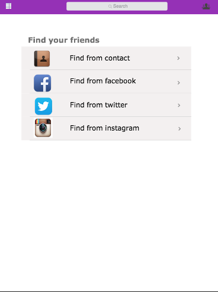
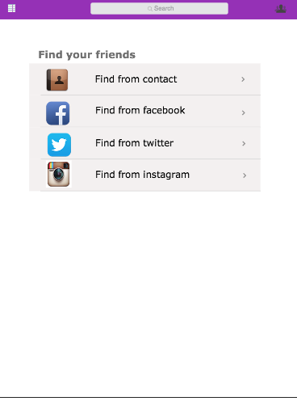

Our course assignment was to address a design problem in the context of college students surviving college. Before we started working in groups, we individually brainstormed design problems. My first attempt was
It can be hard for college students to find new people and make new friends on campus.
After discussing with teammates and researching UW Facebook social events, I quickly realized that from student activity, study session, group work or just dorm meeting, it is actually quite easy for students to meet new people and make friends in college.
Inspired by the problem I brought up, my teammate Preston came up with a problem that after meeting new people, it could be hard for college students to maintain their friendship
As a junior in college, I have lost contacts with some friends that I made in my freshmen year, mainly because that we have different majors and our schedule changes too often.
I agreed with my teammate’s problem and we did a research online, according to O'Connell's research on "why people lose so many friend during college", 71% percent of college students that are outside fraternity or sorority reported that they find it really hard to keep a friendship in college. Supported by both personal experience and online research data,
College students have difficulties keeping up to date with their friends
becomes our focus.


 
